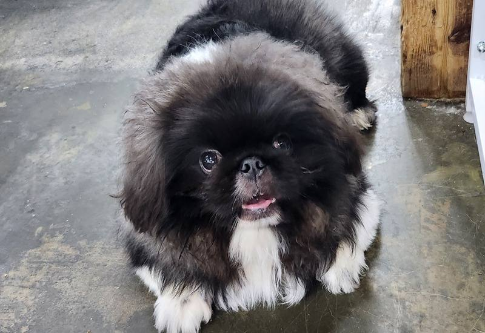
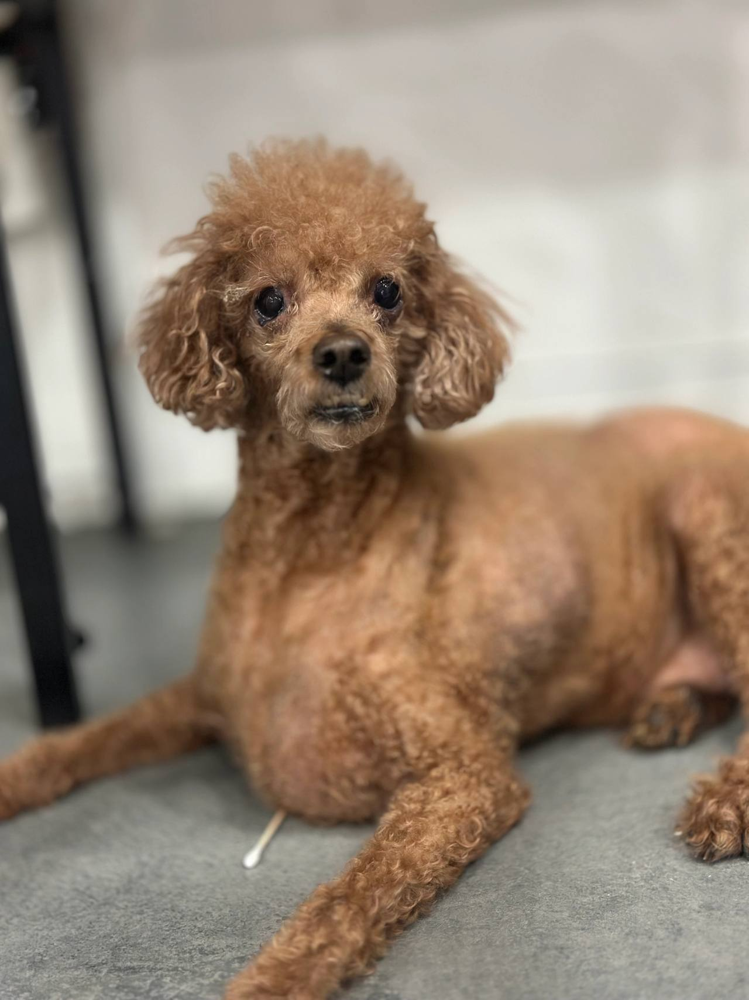
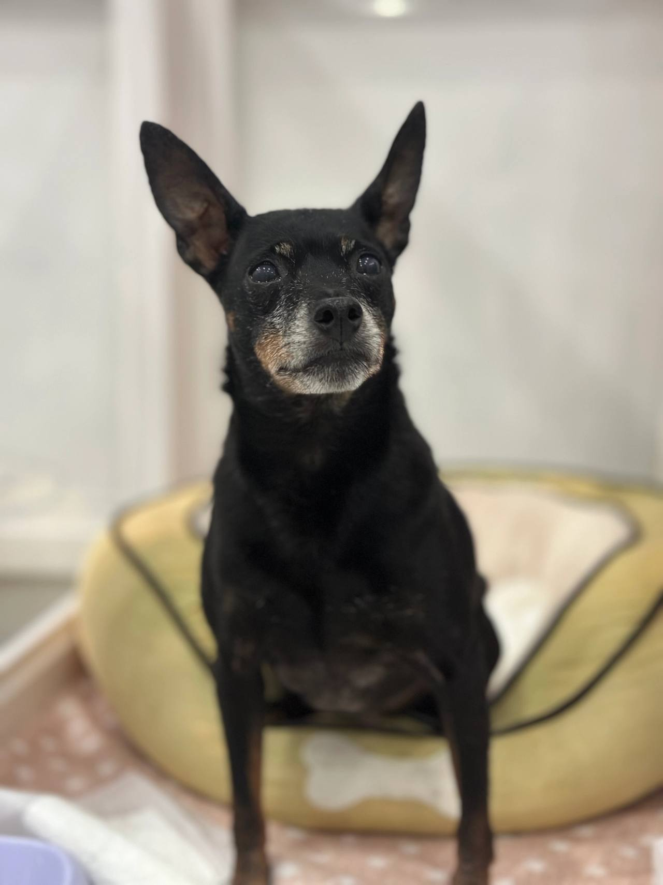

임신, 출산
출산 전후로돌보기 어렵거나아기와 함께 두기불안할 때
LOCAL GUIDE
가족 같은 반려견이 새로운 전환점을 맞이할 수 있도록 올바른 강북구유기견보호소 환경을 찾는 일에 소홀함이 없어야 합니다. 소음 스트레스를 줄이고 개체 간 불필요한 충돌을 방지하는 분리 배치가 기본입니다. 현재 보호 공간에 잔여석이 없을 경우 위탁이 거절되므로 사전 조율을 반드시 거쳐야 합니다.
REHOMING
개인적인 사정으로 반려견과 더 이상 함께하기 어려운 상황일 때 체계적인 절차를 거쳐 아이를 입소시키고 무료 분양으로 보금자리를 이어 줍니다. 전화 상담(0505-707-0401)을 통해 현재 상황을 파악하며 무리한 수용 대신 여건에 맞춰 신중하게 돌봄을 시작합니다.
갑작스러운 환경 변화 속에서도 아이가 평온함을 잃지 않도록 세심하게 보살피며 다음 행보를 준비합니다. 이는 책임 있는 보호 속에서 아이에게 새로운 가족을 만날 기회를 열어 주는 과정입니다.
새로운 가족을 찾아 주는 일은아이에게 건넬 수 있는마지막 선물입니다.
출산 전후로돌보기 어렵거나아기와 함께 두기불안할 때

함께 살다동물 알러지가 나타나생활이 어려워졌을 때

해외로 데려갈 수 없거나이사한 집에서함께하기 어려울 때군 입대와 오랜 부재도같은 경우에 가깝습니다.

보호자가 아프거나연로해졌을 때아이도 나이가 들어집에서 돌보기 어려울 때
상담부터 입양 공고까지, 순서는 같습니다.

유선 상담을 통해 나이, 지역, 질병 유무와 특이 상황을 확인합니다. 센터 내부 공간을 종합적으로 살펴본 뒤 1차 입소 가능 여부를 결정합니다.

직접 센터로 방문하시거나 이동 지원 일정을 조율하여 선택합니다. 전국 어디든 전담 인력이 무상으로 픽업하여 이동을 돕습니다.

제반 확인 사항과 규정된 비용 조항을 면밀하게 검토합니다. 안내 내용을 충분히 숙지한 후 정식 입소 동의서를 작성합니다.

건강 상태와 함께 대형견, 소형견, 노령견 여부를 다각도로 살핍니다. 확인된 상태에 맞춰 아이가 안전하게 머물 전용 공간을 정합니다.

안정적인 생활 속에서 아이의 사진과 영상을 정성껏 촬영합니다. 새로운 인연을 맞이할 수 있도록 사전 자료를 차분히 정리합니다.

공식적인 입양 공고를 등록하여 아이의 다음 여정을 이끕니다. 적합한 보금자리를 찾아 새로운 가족과 따뜻하게 연결됩니다.
개별 일과와 성향 점검을 거쳐 생활 적응을 준비하고 있는 강아지 현황입니다.
양육 환경과 반려견의 성향이 부합하는지 점검하는 순서입니다.
주거 형태, 가족 구성원의 동의 여부, 돌봄 시간 등을 유선 상담을 통해 점검합니다.
보호소에 방문하여 개체의 건강 이력과 행동 특성을 확인하고 직접 대면 시간을 가집니다.
지속 양육에 관한 세부 항목을 확인하고 확인 서류를 작성한 뒤 가정을 이룹니다.
산책하고, 밥 먹고, 미용하는 보호소의 하루입니다. 사진을 누르면 그 이야기를 볼 수 있어요.
안내
새로운 전환점을 모색하는 강북구 보호자분들께서는 독단적 처분보다 전문 보호 체계를 선택하고 계십니다.
아이를 위한 올바른 거처를 결정하기 전 0505-707-0401 전화 상담을 통해 강북구유기견보호소 실시간 공간 여유와 기준을 점검해 보세요. 자리가 없으면 수용이 불가능하다는 원칙을 준수하고 있어 사전 확인 없이는 헛걸음이 될 수 있습니다. 신중한 소통을 거쳐 방문 일정과 면담 계획을 단계적으로 확정해 드립니다.
접수된 데이터를 토대로 센터 내 격리 관리실과 메인 생활실의 공실 현황을 대조합니다. 무분별한 입소로 인한 밀집 현상을 차단하기 위해 시설별 수용 한도 규정을 엄격히 준수하며 정원이 초과된 경우 일정 조율을 요청드립니다.
공간 배정이 가능하다고 판단되면 해당 아이에게 투입될 전문 돌봄 자원을 산정합니다. 강북구 강북구유기견보호소 검토 시 고정된 획일적 수수료가 적용되지 않는 이유는 아이의 노령화 정도나 지속적 투약 필요성 등에 따라 개별 맞춤 예산이 산출되기 때문이며, 모든 내역은 투명하게 보호자에게 고지됩니다.
인터넷에서 0원 입소를 내세우는 일부 광고를 접했던 민석 씨는 비용 책정 방식에 대해 의구심을 가졌습니다. 그러나 상담사는 고정된 수수료를 획일적으로 부과하거나 무상 입소를 약속하는 것은 아이를 제대로 먹이고 치료하는 보호 환경에서 불가능한 구조임을 솔직히 설명했습니다.
아이가 중형견 체구이며 과거 알레르기 피부 질환으로 특수 사료 급여와 정기적인 약용 샴푸 관리가 필요하다는 점을 반영하여 개별 맞춤 관리 비용이 산정되었습니다. 강북구 강북구유기견보호소 확인 과정에서 산출 내역의 근거를 명확하게 청취한 민석 씨는 비로소 깊은 신뢰를 가질 수 있었습니다.
Q: 지자체 공설 보호소와 민간 전문 보호 시설의 가장 결정적인 차이는 무엇인가요? 많은 분들이 두 기관을 혼동하여 안타까운 상황에 처하곤 합니다. 공설 유기시설은 유실·유기된 개체를 임시 보호하여 공고를 올리는 국가 행정 기관으로, 정해진 공고 기간이 만료되면 공간적 한계로 인해 인도적 조치 절차를 밟게 됩니다.
A: 반면 전문 케어 센터는 아이가 머무는 동안 지속적인 돌봄과 위생 관리를 제공하며, 새로운 가족을 찾을 때까지 장기적으로 생활할 수 있는 환경을 보장합니다. 강북구 강북구유기견보호소 고민을 안고 계신 보호자라면 아이의 지속적인 삶을 위해 어떤 기관의 보호 체계를 선택해야 하는지 신중히 판단하셔야 합니다.
아이가 센터에 안착한 뒤 어떻게 지내는지 확인하는 것은 모든 보호자의 당연한 바람입니다. 센터는 전문 인력을 통해 아이의 적응 사진과 영상을 기록하여 체계적으로 보관합니다.
다만 잦은 면회는 아이의 마음을 다시 흔들어 적응을 방해하므로, 사진과 공식 채널을 통한 비대면 소통 방식을 준수해야 합니다. 이러한 기준이 투명하게 안내되고 있는지 체크해 보시기 바랍니다.
보호 시설 이용 시 소요되는 비용은 정형화된 고정 수수료 체계로 획일화할 수 없습니다. 아이의 현재 연령, 지속적인 투약이 필요한 만성 질환의 유무, 대형견 여부, 중성화 시행 여부, 이상 행동 교정 필요성에 따라 머무는 기간 동안 투입되는 보살핌 자원이 완전히 달라지기 때문입니다. 따라서 획일화된 금액이나 비현실적인 무비용 안내는 현실적인 보호 환경을 훼손할 수 있습니다.
정확한 보호 관리 비용은 상담사를 통해 아이의 상세 신체 정보와 특이점을 확인한 뒤 투명하고 합리적인 기준에 맞추어 개별적으로 산정됩니다. 0505-707-0401을 통한 사전 유선 대화에서 모든 항목의 산출 배경을 명확하게 청취할 수 있습니다.
생활 공간에 완벽히 적응한 아이는 전담 미디어 팀에 의해 일상 사진과 영상으로 기록됩니다. 아이의 해맑은 표정과 사랑스러운 습관, 장점과 주의점을 솔직하고 매력적으로 담아낸 공식 입양 프로필이 완성됩니다.
이 기록들은 공식 홈페이지와 SNS 네트워크를 통해 입양 희망자들에게 투명하게 공개됩니다. 허위 지점 주소나 과장된 문구 없이 실제 센터에서 생활하는 모습을 그대로 보여주는 신뢰도 높은 아카이빙이 진행됩니다.
민석 씨는 병상에 누워 있어 아이를 직접 센터까지 데려다줄 수 없는 처지였습니다. 이에 센터의 반려동물 전용 안심 픽업 서비스를 신청했습니다. 약속된 시간에 맞춰 특수 공조 장치와 안전 켄넬이 장착된 전용 운송 차량이 집 앞으로 도착했습니다.
전문 운송 기사는 아이가 놀라지 않도록 천천히 냄새를 맡게 하며 안정시킨 후 안전하게 차량에 탑승시켰습니다. 이동 중 휴게소에서의 휴식 장면, 센터 도착 후 격리실에 안착한 모습까지 사진과 영상으로 민석 씨의 스마트폰에 실시간 전송되었습니다.
Q: 포털 지도에서 검색되는 지역 지점을 바로 찾아가면 안 되나요? 인터넷상에는 실제 거점 시설이 없으면서 키워드 선점만을 위해 등록된 유령 주소들이 상당수 존재합니다. 이러한 곳에 무작정 방문할 경우 문이 닫혀 있거나 엉뚱한 사무실인 경우가 많아 큰 낭패를 볼 수 있습니다.
A: 또한 실제 시설이라 하더라도 당일 수용 공간이 가득 차 있으면 입소가 불가능합니다. 따라서 전국 통합 창구를 통해 실시간 공실과 격리실 상태를 먼저 파악해야 합니다. 입소 가능 여부를 빠르게 검토받으시려면 0505-707-0401로 문의하여 정확한 배정 절차를 밟으셔야 합니다.
필수 서류 구비 및 현장 방문 일정 예약
보호 여력이 확인되면 신분증 사본과 동물등록 증빙 서류를 지참하여 정해진 방문 시간을 확정합니다.
생활 습관 및 병력 정보 사전 공유
입소 후 스트레스를 줄이기 위해 평소 배변 패턴, 식이 습관, 기저 질환 정보를 세밀하게 상담합니다.
현장 내방 및 물리적 환경 대면 검진
실제 머물게 될 시설의 위생 상태를 둘러보고 아이의 보행 상태, 피부, 안구 건강을 대면 확인합니다.
강북구유기견보호소 상담 전화는 무엇인가요?입소 상담 전화는 0505-707-0401입니다. 강북구이라고 해서 바로 맡길 수 있는 것은 아니고, 자리와 아이 상태를 먼저 확인합니다.
강북구에 따로 적힌 보호소 주소가 있나요?강북구유기견보호소 페이지는 강북구 상담 안내입니다. 이 글에 없는 주소를 그 지역 지점이라고 안내하지 않습니다.
전화하면 바로 진행되나요?자리가 없거나 생활이 맞지 않으면 바로 진행되지 않습니다. 전화로 확인한 뒤 만남을 정합니다.
시설 주소나 사진만 보고 입소를 바로 결정해도 문제없을까요?과장된 사진에 의존하지 마시고 유선 상담으로 실제 운영 규정과 정원 여부를 면밀히 검증한 뒤 진행하셔야 안전합니다.
시설 이용에 수반되는 관리 비용은 어떻게 결정되나요?아이의 체격, 연령, 기저 질환에 따른 특별 케어 필요성에 따라 산출 기준이 달라지며 유선 상담 시 투명하게 안내해 드립니다.
입소 시 어떤 증빙 서류들을 필수적으로 지참해야 하나요?보호자 신분증, 동물등록 정보 변경을 위한 등록증 또는 식별 번호, 최근 진료 및 접종 증명서를 지참하셔야 합니다.
개인 차량 이동이 불가능한 경우 이동 편의가 지원되나요?장거리 이동이나 대중교통 이용이 어려운 상황이라면 안전 전용 차량 운행 여부를 유선 상담을 통해 조율하실 수 있습니다.




CONTACT
입양과 입소, 전국 어디서든 전화로 상담합니다.
전국 입소문의